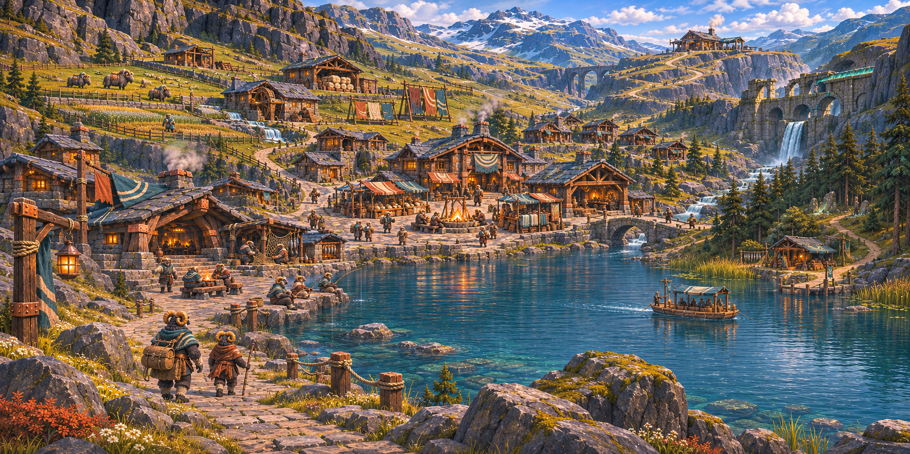

第一场雨
多队试验与救援；保存种子和工具，发现六个聚落的共同标记。
WORLD · PEOPLE · STORY · SYSTEM · VALUE
世界 · 人物 · 故事 · 游戏构造 · 能力与后期价值
在共同生活中理解世界，在创造与协作中形成文明，再把经验交给后来者。
前期概念与故事研究；图像为概念，游戏系统尚未实现。
多人生活、社交、合作叙事与文明创造
走动、钓鱼、聊天、探索、制作与共同活动
多批新住民参与同一段历史，各队留下不同贡献
建立值得停留的家园，也给玩家走出去的理由

开阔高地、草坡与湖泊；厚木梁、深色石墙、板岩、旧铜和青绿 / 赭红织物。
住处、长屋、渔场与网具工坊；邻里交往、钓鱼与共同作业。
集市、旅店、炉火与公共记录；交易、来客、活动和议事。
草场、作物、仓储、织坊与磨坊；材料、制作和运输。
采集、偏僻钓点、旧通路；独处、结伴探索与发现。
施工痕迹、遗迹与历史证据；调查、试验和主线推进。
驿站、船运和远行；连接其他聚落、人物与新故事。
道路、地形、材料来源、生产与生活彼此关联；公共钓点与日常动线帮助玩家自然相遇。

岚角族（工作名）：原创高地盘羊式非人类族群。
盘角、短羊吻、厚躯干、粗毛、宽掌与分蹄；成人感、稳重且可亲。
宽门洞与宽路径适合身体；服饰、工具和建筑共享材质语言，纹样要有生活与历史依据。
救人并建立标准 → 获得权威 → 隐瞒石湾代价 → 接受共同判断 → 承担责任。
守住家园、回避旧事 → 公开未送达的急令 → 迁离老屋 → 走出自责。
简化答案 → 看见遗漏与评分偏向 → 保存失败和不确定性 → 整理《六水录》。
从概念到模型：设定 / 三视参照 → 三维初模 → 网格与材质 → 骨骼权重 → 生活动画 → 引擎接入 → 多人实测。
六个聚落依赖逐渐失衡的旧水道。十八年前的“白雨”夺走洛恩父亲；他因此追求统一控制。玩家拼合记录，发现失效图纸、被遗漏的地方经验与迟到指令共同构成了灾难。
多队试验与救援；保存种子和工具，发现六个聚落的共同标记。
通过计量、交换与履约恢复往来；修渠同盟带来真实收益。
旧账册、实地痕迹与渡石的急令互证；完整过程比整洁图纸更重要。
洛恩隐瞒石湾将成为蓄水区的安排；安全与繁荣的代价由谁承担？
玩家设计模型和演练，再用实地核对检验；渡石也要让出老屋。
山口、岸边、辅渠、主闸多队协同；洛恩保留专业职责并交出独断。
修复、问责、迁居与新约定；记录失败和贡献，新学徒开始下一次尝试。
主线有明确结局：家园与水道保住，损失与责任得到处理，各聚落留下可检验、可修订的共同记录。个人不被写成全世界唯一救世主。
地形 / 水系 / 植被 / 建筑 / 道路 / 日常动线 / 族群文化
身体比例 / 操控 / 镜头 / 动画 / 碰撞 / 道具连接
钓鱼 / 采集 / 制作 / 交换 / 聊天 / 住处 / 活动
共享状态 / 服务器裁定 / 存档 / 加入退出 / 个人与小队进度
世界事实 / 人物目标 / 条件事件 / 有限分支 / 历史记录
活动模板 / 目标 / 条件 / 计分 / 结束 / 反馈 / 版本
以上是设计构造，不代表已实现的游戏架构。引擎、容量、保存方案与成本均未确定。
看水流、材料、生物与季节，辨认现象与适用条件。
比较不同方案，让失败有可解释、可重复的反馈。
互证账册、口述、图纸与痕迹，保留来源和不确定性。
分工、计量、承诺、公共资源与代价，影响具体人物。
从钓鱼节改规则开始，逐步设计活动、任务与模拟试验。
文明发展线：自然条件与物质 → 可用材料 → 工具 → 设施 → 聚落 → 交换与规则 → 共同记忆 → 玩家新创作。
物质形成史、技术史与文明史分别理解与建模；首版从玩家的认知与工具起步。真实知识、虚构历史和简化游戏模型分开标注；不同聚落可以发展不同路径。学习效果需要验证。
世界真相、人物目标、关键事实、主线因果与结局边界。
信任谁、学习什么、与谁同行；关系与立场各自记录。
施工方案、分工与现场表现；平票按预设规则处理。
有限设施、服务先后、活动与贡献记录；按公开规则决定。
弃权或离队不堵其他人；贡献不增加票权；公共建设不锁个人主线；关键人物不能被随意永久移除。
共享生活区与章节现场明确时间点；新人能学习已有成果，重访不覆盖首次立场。
首个闭环：抵达 / 钓鱼 → 观察涨水 → 试验与选择 → 协作施工 / 救援 → 六个标记 → 活动试玩 → 下一章。
文化、完整故事、事实与可变结果清单。
一处实机湖岸、一位可动角色；走、坐、握杆。
两人互见、聊天、钓鱼与最小保存。
试验、分歧、救援和记录；验证重访、弃权与低人数。
其他聚落、主线人物与受限创作工具。
依据真实体验推进，不按地图数量、技术名词或功能清单扩张；尚无开发周期与预算承诺。
为玩家提供停留、相遇和共同完成一件事的体验。
让家园、故事、技术传播与公共历史持续积累。
让玩家设计玩法、组织节庆，形成社区文化与内容。
在实践中理解规律、证据、合作与规则设计。
归属、关系、共同记忆、创造表达。
观察、试验、因果、证据与反思。
可复用美术规则、故事、内容模板与版本档案。
从小原型逐步形成内容、社区和创作生态。
均为潜在价值，须由可玩原型、真实参与及内容审校验证；没有营收或教育成绩承诺。

被否定：缺少奇幻身份与感觉。

被否定：环境与厚重角色不搭。

局部认可：只是一处居住角落。
地区总览被定位为部落住宅区；世界还需要其他聚落、文化、探索空间与真实生活联系。故事和游戏并没有因为概念图完成而自动成立。